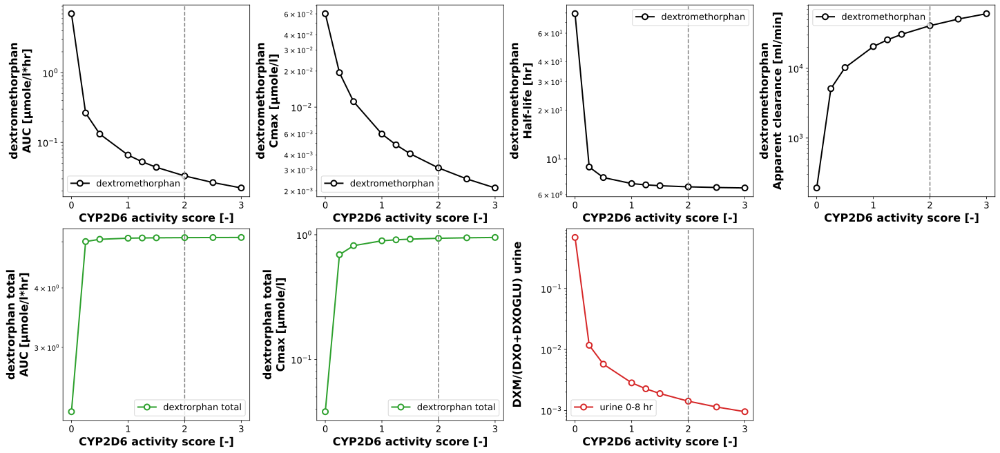
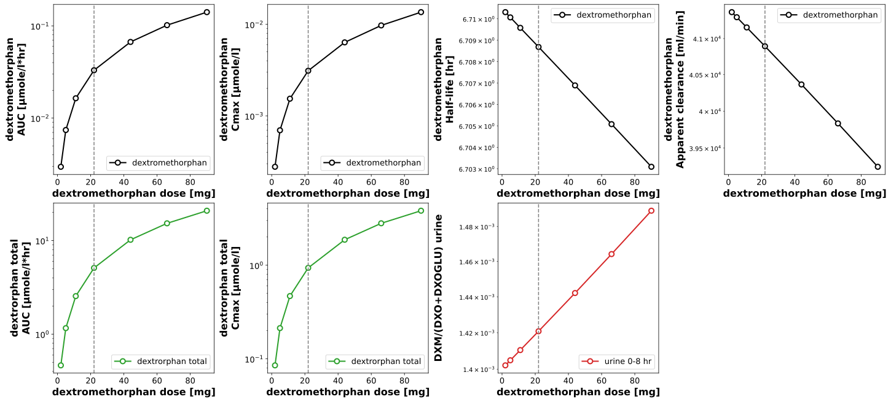

Overview
Models
| model | source |
|---|---|
| model | dextromethorphan_body_flat.xml |
Datasets
The experiment has no datasets.
Figures (2)




Code
"""Pharmacokinetic parameters over the CYP2D6 activity score and the dose.
The two scans of the phenotype and of the dose are simulated long enough for
the terminal phase of the poor metabolizers (a half-life of about 80 hr) and
analysed with the non-compartmental analysis of `dextromethorphan_pk.py`. The
figures show the pharmacokinetic parameters of dextromethorphan and of the
total dextrorphan and the urinary metabolic ratio of the 0-8 hr collection,
the phenotyping metric, over the scanned value.
In a run over the draws of the fitted parameters (`run_simulation
pkdb_models.models.dextromethorphan --uncertainty`) every point of a scan is
simulated for every draw; the figures draw the median of the draws with the
band of their quantiles.
"""
from typing import Any, ClassVar, TypedDict, override
import matplotlib.pyplot as plt
import numpy as np
import pandas as pd
from matplotlib.axes import Axes
from pkpdsim.scan import scan_dimensions, start_values
from sbmlsim import Q
from sbmlsim.plot.serialization_matplotlib import FigureMPL
from sbmlsim.result import ScanResult
from sbmlsim.simulation import Dimension, Scan, Simulation
from sbmlsim.units import Quantity
from pkdb_models.models.dextromethorphan import MODEL
from pkdb_models.models.dextromethorphan.dextromethorphan_pk import summarize
from pkdb_models.models.dextromethorphan.experiments.base_experiment import (
DexSimulationExperiment,
)
class ScanSpec(TypedDict):
"""Definition of a single parameter scan."""
parameter: str
default: float
range: np.ndarray
scale: str
unit: str
label: str
class PKParameterScan(DexSimulationExperiment):
"""Pharmacokinetic parameters over the CYP2D6 activity score and the dose."""
font: ClassVar[dict[str, Any]] = {"weight": "bold", "size": 16}
tick_font_size = 13
#: transparency of the band of the draws
band_alpha = 0.15
#: the end of the simulations [hr]: the terminal half-life of the poor
#: metabolizers is about 80 hr, so 14 days leave little to extrapolate
tend = 336
#: the output times [hr]: every 0.05 hr in the first day (absorption and
#: maximum, tmax 1-2.5 hr), every hour after it. A finer grid multiplies
#: the memory of a run over the draws (a point of a scan per draw) without
#: changing the parameters: against a grid of 0.02 hr and 0.5 hr the AUC,
#: Cmax and half-life differ by less than 0.01 % and tmax by one step of
#: the grid; 8 hr (the urinary metabolic ratio) is a time of both grids
times: ClassVar[tuple[float, ...]] = tuple(
np.unique(
np.concatenate([np.linspace(0, 24, 481), np.linspace(24, 336, 313)])
).tolist()
)
#: the oral dose of the phenotyping [mg of the base], 30 mg of the
#: hydrobromide monohydrate
dose_dxm = 22.0
#: the scans: the activity score of the CYP2D6 diplotype (the custom
#: allele of both alleles) and the oral dose
scan_map: ClassVar[dict[str, ScanSpec]] = {
"cyp2d6_activity": {
"parameter": "LI__cyp2d6_ac",
"default": 2.0,
"range": np.array([0.0, 0.25, 0.5, 1.0, 1.25, 1.5, 2.0, 2.5, 3.0]),
"scale": "linear",
"unit": "dimensionless",
"label": "CYP2D6 activity score [-]",
},
"dose": {
"parameter": "PODOSE_dxm",
"default": 22.0,
"range": np.array([2.0, 5.0, 11.0, 22.0, 44.0, 66.0, 90.0]),
"scale": "linear",
"unit": "mg",
"label": "dextromethorphan dose [mg]",
},
}
#: the pharmacokinetic parameters of the figures: the analyte of
#: `dextromethorphan_pk.ANALYTES` -> its parameters
pk_parameters: ClassVar[dict[str, tuple[str, ...]]] = {
"dxm": ("auc_inf_obs", "cmax", "thalf", "cl_f"),
"dxo_total": ("auc_inf_obs", "cmax"),
}
#: the colors of the analytes
pk_colors: ClassVar[dict[str, str]] = {
"dxm": "black",
"dxo_total": "tab:green",
}
#: the names of the analytes
pk_names: ClassVar[dict[str, str]] = {
"dxm": "dextromethorphan",
"dxo_total": "dextrorphan total",
}
#: the time of the urinary metabolic ratio [hr], the end of the 0-8 hr
#: collection of the phenotyping
mr_urine_hr = 8.0
@override
def simulations(self) -> dict[str, Scan]:
scans: dict[str, Scan] = {}
for scan_key, scan_data in self.scan_map.items():
changes = {
**self.default_changes(),
"PODOSE_dxm": Q(self.dose_dxm, "mg"),
# the custom activity of both alleles, which the scan of the
# activity score sets
"LI__cyp2d6_allele1": Q(-1, "dimensionless"),
"LI__cyp2d6_allele2": Q(-1, "dimensionless"),
"LI__cyp2d6_ac": Q(
self.scan_map["cyp2d6_activity"]["default"], "dimensionless"
),
}
# the simulation does not set what the dimension scans, the
# dimension would replace it
changes.pop(scan_data["parameter"], None)
scans[f"scan_{scan_key}"] = Scan(
simulation=Simulation(
time_unit="hr",
end=self.tend,
times=self.times,
preinit_changes=changes,
),
dimensions=[
Dimension(
"dim_scan",
values={
scan_data["parameter"]: Q(
scan_data["range"], scan_data["unit"]
)
},
)
],
)
return scans
def _across(self) -> str | None:
"""Get the dimension of the draws of the fitted parameters, `None` without."""
return None if self.uncertainty is None else self.uncertainty.id
def _scanned(self, res: ScanResult, parameter_id: str) -> np.ndarray:
"""Get the values of the scanned parameter at the points of the scan."""
values = start_values(res, parameter_id)
across = self._across()
if across is not None:
values = values.isel({across: 0})
return np.asarray(values.values, dtype=float)
def _summary(
self, df: pd.DataFrame, key: str, unit: str, target: str
) -> tuple[Quantity, Quantity | None, Quantity | None]:
"""Get a parameter at the points of a scan, the median and the band of the draws.
Returns:
The values (the median of the draws in a run over them), and the
lower and the upper quantile, `None` without draws.
"""
run = self.uncertainty
if run is None:
return Q(df[key].to_numpy(dtype=float), unit).to(target), None, None
summary = summarize(df, key, run.quantiles)
return tuple( # ty: ignore[invalid-return-type]
Q(summary[column].to_numpy(), unit).to(target)
for column in ["median", "lower", "upper"]
)
def _mr_urine(
self, res: ScanResult
) -> tuple[Quantity, Quantity | None, Quantity | None]:
"""Get the urinary metabolic ratio of the 0-8 hr collection of every point.
Returns:
The ratios (the median of the draws in a run over them), and the
lower and the upper quantile, `None` without draws.
"""
across = self._across()
(scandim,) = scan_dimensions(res, across)
time = Q(np.asarray(res["time"].values, dtype=float), res.units["time"])
index = int(np.argmin(np.abs(time.to("hr").magnitude - self.mr_urine_hr)))
ratios = res["dxm_dxo_total_urine"].isel(time=index)
if across is None:
return (
Q(np.asarray(ratios.values, dtype=float), "dimensionless"),
None,
None,
)
run = self.uncertainty
assert run is not None
values = np.asarray(ratios.transpose(scandim, across).values, dtype=float)
low, high = run.quantiles
return (
Q(np.median(values, axis=1), "dimensionless"),
Q(np.quantile(values, low, axis=1), "dimensionless"),
Q(np.quantile(values, high, axis=1), "dimensionless"),
)
def _plot(
self,
ax: Axes,
x: np.ndarray,
y: Quantity,
y_lower: Quantity | None,
y_upper: Quantity | None,
color: str,
label: str,
) -> None:
"""Draw a parameter over the scanned values with the band of its draws."""
if y_lower is not None and y_upper is not None:
ax.fill_between(
x,
y_lower.magnitude,
y_upper.magnitude,
color=color,
alpha=self.band_alpha,
linewidth=0,
)
ax.plot(
x,
y.magnitude,
marker="o",
linestyle="-",
linewidth=2.0,
color=color,
markeredgecolor=color,
markeredgewidth=2.0,
markerfacecolor="white",
markersize=8,
label=label,
)
@override
def figures_mpl(self) -> dict[str, FigureMPL]:
"""Figures of the pharmacokinetic parameters of every scan."""
pk_dfs = self.calculate_dextromethorphan_pk(substances=list(self.pk_parameters))
figures: dict[str, FigureMPL] = {}
for scan_key, scan_data in self.scan_map.items():
sim_key = f"scan_{scan_key}"
res = self.results[f"task_{sim_key}"]
df = pk_dfs[sim_key]
x = self._scanned(res, scan_data["parameter"])
panels = [
(substance, key)
for substance, keys in self.pk_parameters.items()
for key in keys
]
ncols = 4
nrows = -(-(len(panels) + 1) // ncols)
f, axes_grid = plt.subplots(
nrows=nrows,
ncols=ncols,
figsize=(5 * ncols, 4.5 * nrows),
dpi=150,
layout="constrained",
squeeze=False,
)
axes = list(axes_grid.flatten())
for ax in axes[len(panels) + 1 :]:
ax.set_axis_off()
for ax, (substance, key) in zip(axes, panels, strict=False):
values = df[df.substance == substance]
y, y_lower, y_upper = self._summary(
values,
key,
str(values[f"{key}_unit"].to_numpy()[0]),
self.pk_units[key],
)
self._plot(
ax,
x,
y,
y_lower,
y_upper,
self.pk_colors[substance],
self.pk_names[substance],
)
ax.set_ylabel(
f"{self.pk_names[substance]}\n"
f"{self.pk_labels[key]} [{self.pk_units[key]}]",
fontdict=self.font,
)
ax.set_yscale("log")
# the urinary metabolic ratio of the phenotyping
ax = axes[len(panels)]
self._plot(ax, x, *self._mr_urine(res), "tab:red", "urine 0-8 hr")
ax.set_ylabel(self.label_mrtot_urine, fontdict=self.font)
ax.set_yscale("log")
for ax in axes[: len(panels) + 1]:
ax.axvline(x=scan_data["default"], color="grey", linestyle="--")
ax.set_xlabel(scan_data["label"], fontdict=self.font)
ax.set_xscale(scan_data["scale"])
ax.tick_params(axis="both", labelsize=self.tick_font_size)
ax.legend(fontsize=self.tick_font_size)
figures[f"pk_{scan_key}"] = f
return figures
if __name__ == "__main__":
MODEL.run_experiments(PKParameterScan, output_dir="test")